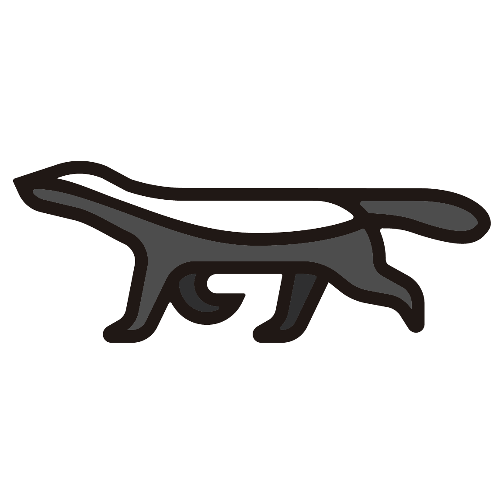

部署工具圖鑑¶
前兩次嘗試的結尾概覽了部署工具的江湖;這一章是深度圖鑑:每家工具的詳細介紹、一張「誰支援哪些服務」的實測矩陣、一張晶片架構支援表,最後教你自己驗貨的方法——因為支援矩陣是動態的,查證能力比任何一張表都保值。
本章資料的查證基準
服務矩陣與架構表均於 2026-07-10 直接查上游源頭:Kolla-Ansible 查 stable/2025.1 分支的 roles、OpenStack-Helm 與 OpenStack-Ansible 查 master 分支、Sunbeam 查 opendev 的 sunbeam-charms、Charms 逐一查 Charmhub API、Sunbeam 架構查 Snap Store API。查證指令都附在文末,表格過期時可自己重跑。
快速回顧:三種部署哲學¶
flowchart TB
subgraph host["🏠 部到主機/LXD(傳統派)"]
CH["OpenStack Charms(Juju)"]
OSA["OpenStack-Ansible"]
end
subgraph docker["📦 容器化、但不用 K8s(中間派)"]
KA["Kolla-Ansible"]
KY["Kayobe(= Kolla + 裸機)"]
end
subgraph k8s["☸️ 跑在 Kubernetes 上(K8s 派)"]
OSH["OpenStack-Helm"]
RHOSO["Red Hat RHOSO"]
MOSK["Mirantis MOSK"]
SB["Canonical Sunbeam"]
end取捨一句話:越往 K8s 派,自動化與自癒能力越強,但除錯要跨的層數越多——嘗試二親身驗證過這個代價。
各工具詳解¶
OpenStack Charms(Juju)——嘗試一走過的路¶

- 陣營:Canonical(Ubuntu 母公司)。
- 怎麼運作:每個服務是一個 charm(打包了安裝與維運邏輯的單元),由 Juju 這個 controller 佈署到主機或 LXD 容器;服務之間宣告 relation,連線資訊(DB 帳密、endpoint)在執行期動態協商。理論優雅:接好線,雲自己長出來。
- 歷史與現況:Juju 生態 2012 年起,曾是 Canonical 商用 OpenStack(Charmed OpenStack)的核心。現在 Canonical 的重心已轉向下一代 Sunbeam——官方說法是 Sunbeam 達到功能對等後將成為預設交付框架。
- 我們的經驗(9 天):relation 模型逼你把元件關係學得非常熟,但協商過程是黑箱、出錯難查;而最後致命的是轉移期的出貨品質——2026-04 時 octavia charm 的 2024.1/stable 只發佈 ppc64el/s390x、cinder-lvm 只有 s390x,主流 amd64 缺貨(詳見前兩次嘗試),三個月後才補齊。
- 適合誰:購買 Canonical 支援、Ubuntu 深度使用者;新案建議直接評估 Sunbeam。
Sunbeam——Canonical 的下一代¶
- 陣營:Canonical。
- 怎麼運作:用 snap 裝起 MicroK8s,再把 OpenStack 服務以 K8s charm(
*-k8s)跑在上面——等於 Canonical 自己也轉進了 K8s 派。主打「一台機器 30 分鐘起一朵雲」的低門檻。 - 現況:上游活躍(OpenStack 官方治理下的正式專案)。注意:目前 snap 只發佈 amd64(2026-07 查證)——想在 ARM 上玩它還不行。
- 適合誰:小規模起步、邊緣運算、想跟著 Canonical 路線走的新案。
Kolla-Ansible——本課程的選擇¶
- 陣營:社群主導,無單一廠商綁定(2014 年起)。
- 怎麼運作:Kolla 把每個服務打包成 Docker image,Kolla-Ansible 用 Ansible 把 image 部到主機(host network、無 K8s),設定在部署期生成寫死。透明、單層、
docker ps一眼看穿。 - 歷史與現況:目前公認的社群主流與自管首選,文件與踩雷資料最豐富。
- 我們的經驗(10 天完課):Day 1 到 Day 11 的一切。它的地雷(ProxySQL、dhclient、Redis jobboard…)全都能定位、能修——這正是它勝出前兩條路線的原因。
- 適合誰:中型自管私有雲、學研單位、lab、不想被廠商綁定的團隊。
Kayobe——Kolla 的裸機加強版¶
- 陣營:StackHPC(英國 HPC 顧問商)主導的社群專案。
- 怎麼運作:Kolla-Ansible 外面再包一層 Bifrost(獨立版 Ironic)做裸機佈建:從「一排空機器」到「一朵雲」一條龍,含 BIOS/RAID/網路的宣告式管理。
- 適合誰:HPC/科研(歐洲尤多)、要管實體機生命週期的機房。學會了 Kolla-Ansible,Kayobe 就只是多學一層。
OpenStack-Ansible(OSA)——元老¶
- 陣營:起源 Rackspace(OpenStack 共同創始公司)。
- 怎麼運作:Ansible 直接把服務裝進 LXC 容器或裸機——不用 image,從發行版套件/原始碼裝,客製彈性最大,建置時間也最長。
- 現況:仍在維護,聲量被 Kolla 蓋過;但下面的服務矩陣會讓你意外——它的覆蓋面非常廣。
- 適合誰:Rackspace 系、需要深度客製每個服務建置細節的團隊。
OpenStack-Helm(OSH)——嘗試二走過的路¶

- 陣營:起源 AT&T + SK Telecom(2017),為電信 NFV 而生;現為社群專案。
- 怎麼運作:OpenStack 每個服務一個 Helm chart,當成應用程式部在 Kubernetes 上;排程、自癒、滾動更新全部交給 K8s。
- 生態:VEXXHOST 的商用發行版 Atmosphere 走同路線(順帶一提,VEXXHOST 正是本課 Day 7 那個 magnum-cluster-api driver 的作者)。
- 我們的經驗(2 天喊停):所有問題都要跨 K8s 與 OpenStack 兩層除錯,單人 lab 成本划不來;詳見 Sprint 2 回顧。
- 適合誰:電信、本來就有 K8s 維運團隊的組織。
TripleO → RHOSO——Red Hat 的路線轉折¶
- 陣營:Red Hat。
- 歷史:TripleO(「用 OpenStack 部署 OpenStack」)撐了十年,是 RHOSP 商用版的底層;上游已於 2024 年退役。
- 現況:RHOSP 18 起改為 RHOSO(Red Hat OpenStack Services on OpenShift)——OpenStack 控制平面直接以 pod 跑在 OpenShift 上,資料平面留在專用節點。業界份量最重的「OpenStack-on-K8s」背書。
- 適合誰:買 Red Hat 訂閱的大企業與電信(北美、歐洲尤多)。
其餘陣營(速覽)¶
- Mirantis MOSK:OpenStack 元老商 Mirantis 的 OpenStack-on-K8s 產品,服務其既有客戶盤。
- 中國發行版群(EasyStack、99Cloud、華為雲 Stack 等):基於上游再打包,重點是政企合規與信創晶片支援(鯤鵬/飛騰/海光/龍芯)。
- DevStack:不在圖鑑內——它只用來在開發機快速起一套改 code,從來不是部署方案。
服務支援矩陣(2026-07-10 實測)¶
「這個工具能幫我部哪些服務?」——五個開源工具對 OpenStack 主要服務的支援現況。✅ = 上游有對應的部署單元(charm/role/chart/playbook);不代表品質與測試深度相同。
| 服務 | Charms | Kolla-Ansible | OSH | OSA | Sunbeam |
|---|---|---|---|---|---|
| Keystone / Glance / Placement / Nova / Neutron / Horizon(核心六件) | ✅ | ✅ | ✅ | ✅ | ✅ |
| Heat | ✅ | ✅ | ✅ | ✅ | ✅ |
| Cinder | ✅ | ✅ | ✅ | ✅ | ✅ |
| Swift | ✅ | ❌(改推 Ceph RGW) | ✅ | ✅ | ❌ |
| Manila | ✅ | ✅ | ✅ | ✅ | ✅ |
| Octavia | ✅ | ✅ | ✅ | ✅ | ✅ |
| Designate | ✅ | ✅ | ✅ | ✅ | ✅ |
| Barbican | ✅ | ✅ | ✅ | ✅ | ✅ |
| Magnum | ✅ | ✅ | ✅ | ✅ | ✅ |
| Ironic | ✅ | ✅ | ✅ | ✅ | ✅ |
| Telemetry(Ceilometer/Aodh/Gnocchi) | ✅ | ✅ | ✅ | ✅ | ✅ |
| Masakari | ✅ | ✅ | ✅ | ✅ | ✅ |
| CloudKitty | ❌ | ✅ | ✅ | ✅ | ✅ |
| Skyline | ❌ | ✅ | ✅ | ✅ | ❌ |
| Watcher | ✅ | ✅ | ✅ | ❌ | ✅ |
| Mistral | ❌ | ✅ | ✅ | ✅ | ❌ |
| Trove | ❌ | ✅ | ✅ | ✅ | ❌ |
| Zun | ❌ | ✅ | ❌ | ✅ | ❌ |
| Zaqar(訊息佇列服務) | ❌ | ❌ | ✅ | ❌ | ❌ |
| Freezer(備份服務) | ❌ | ❌ | ✅ | ❌ | ❌ |
| Venus(log 管理) | ❌ | ✅ | ❌ | ❌ | ❌ |
怎麼讀這張表:
- 核心 + 主流加值服務(本課用的那 11 個)家家都有——差異全在長尾。選工具時先列出你真正需要的服務,再看表,多數人會發現「其實哪家都夠」。
- Kolla-Ansible 沒有 Swift 是最常讓人意外的一格:社群的判斷是物件儲存交給 Ceph RGW(Kolla 有
ceph-rgw整合),不再維護原生 Swift。要純 Swift,得看 Charms/OSH/OSA。 - Charms 的長尾缺口明顯(CloudKitty/Skyline/Mistral/Trove/Zun 都沒有)——與其說是技術問題,不如說反映了 Canonical 資源已轉向 Sunbeam 的現實。
- OSH 是唯一有 Zaqar/Freezer 的,電信基因使然;但反而沒有 Zun。
- OSA 意外地廣(還有表外的 Adjutant 工單服務)——元老的積累。
- Sunbeam 刻意精簡:現代核心導向,長尾服務多數尚未跟上。
晶片架構支援(2026-07-10 實測)¶
| 工具 | amd64 | arm64 | ppc64el(POWER) | s390x(大型主機) | 依據 |
|---|---|---|---|---|---|
| Charms | ✅ | ✅ | ✅ | ✅ | Charmhub API 逐 charm 查證(見文末指令);注意嘗試一的教訓:個別 charm 個別 track 可能缺貨 |
| Kolla-Ansible | ✅ | ✅ | ❌ | ❌ | 官方 support matrix 只發佈 x86_64 與 aarch64 兩套 image |
| OSH | ✅ | 視 image 而定 | ❌ | ❌ | chart 本身不綁架構,實際取決於你用的容器 image;官方發佈以 amd64 為主 |
| OSA | ✅ | 理論可行 | — | — | 從發行版套件/原始碼安裝,不依賴預建 image;上游 CI 以 x86_64 為主,其他架構自己扛測試 |
| Sunbeam | ✅ | ❌ | ❌ | ❌ | Snap Store API:openstack snap 目前只發佈 amd64 |
兩個帶得走的觀察:
- 「支援矩陣」永遠是三層的:工具說支援 → 該架構的套件/image 真的有發佈 → 你要的那個版本那一刻真的抓得到。嘗試一敗在第三層(charm 宣稱四架構,2024.1/stable 當下只出了 ppc64el/s390x)。
- 中國信創晶片(鯤鵬 ARM、飛騰、海光、龍芯)不在上游矩陣裡——那是中國發行版各自維護的價值所在,也是該市場選型的硬條件。
自己驗貨:別信任何一張表(包括這張)¶
支援矩陣每半年就會漂移。這一節才是真正保值的——五條指令,隨時重新產出上面兩張表:
# Charms:某服務有沒有 charm?哪些架構?哪些 track?
curl -s "https://api.charmhub.io/v2/charms/info/octavia?fields=channel-map" | jq '
[."channel-map"[] | {track: .channel.track, risk: .channel.risk,
arch: .channel.base.architecture}] | unique'
# Kolla-Ansible:某版本支援哪些服務?(roles 目錄 = 服務清單)
gh api "repos/openstack/kolla-ansible/contents/ansible/roles?ref=stable/2025.1" --jq '.[].name'
# OpenStack-Helm:有哪些 chart?
gh api "repos/openstack/openstack-helm/contents" --jq '.[] | select(.type=="dir") | .name'
# OpenStack-Ansible:有哪些服務 playbook?
gh api "repos/openstack/openstack-ansible/contents/playbooks" --jq '.[].name' | grep '^os-'
# Sunbeam:有哪些 K8s charm?snap 出了哪些架構?
curl -s "https://opendev.org/api/v1/repos/openstack/sunbeam-charms/contents/charms" | jq -r '.[].name'
curl -s -H "Snap-Device-Series: 16" "https://api.snapcraft.io/v2/snaps/info/openstack" | jq '[."channel-map"[].channel.architecture] | unique'
這也是本課程一路的方法論:以裝好的原始碼與官方 API 為準,不信部落格、不信記憶(部落格常是舊版做法,記憶會漂移——本頁作者親測)。
下一步¶
- 回到我們的故事 → 前兩次嘗試
- 看這些工具部出來的服務長什麼樣 → Day 11 · 服務全景圖
- 動手走一遍社群主流路線 → 課程主線 Day 0
本頁吉祥物圖像為 OpenInfra Foundation 官方 Project Mascots,版權屬原基金會,此處作社群教學用途。服務矩陣與架構表為 2026-07-10 對各上游源頭之查證結果,方法見文中指令。